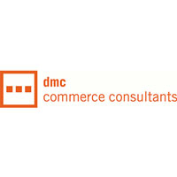

Auf der folgenden Seite finden sie einige Stationen meines beruflichen Werdegangs. Zudem erfahren sie mehr über Mitgliedschaften und Interessen.
Wichtige Stationen auf dem Weg zum Jetzt

management consultant
E-Commerce
Seit Oktober 2014 arbeite ich als management consultant bei der dmc commerce consultants GmbH in Stuttgart. Ich freue mich sehr über diesen Schritt, der mir neue Impulse und Herausforderungen bringt.
Management Consulting, E-Commerce

Freiberufler
Web und Consulting
Seit Februar 2013 arbeite ich freiberuflich. Der konsequente Schritt, um interessante Projekte zu realisieren, selbstständige Erfahrungen zu machen und Spaß zu haben.
Webdesign, Consulting, Fun

Praktikum
VW Consulting
Von Oktober 2012 – Januar 2013 absolvierte ich ein Praktikum bei VW Consulting, der internen TOP-Management Beratung des Volkswagen Konzern. Ich begleitete Projekte im Geschäftsfeld Finanzen und IT rund um die IT-Projektportfolio Planung und IT Operations Management.
Struktur, Analyse, Präsentation

Master Studium
WWU Münster
Seit 2011 studiere ich in Münster Information Sytems. Dieser internationale ausgerichtete Studiengang ergänzt meine bisherigen Erfahrungen vor allem im Bereich IT-Management und Business Process Management.
IT Management, Prozess Management, BWL

Berufserfahrung
1 Jahr Bigpoint
Zwischen 2010 und 2011 war ich 1 Jahr bei Bigpoint beschäftigt. Dort entwickelte ich Online-Tools für interne Prozesse, z.B. Single-Sign-On oder I18N. Schwerpunkt der Entwicklung waren PHP und Java
PHP, Java, i18N

Auslandssemester
University of Limerick
Von September 2009 – Januar 2013 absolvierte ich ein Auslandssemester in Limerick (Irland). Der Austausch mit Studierenden aus der ganzen Welt und ein Einblick in angelsächsische Lehre erweitern den Horizont.
International, Menschen, Englisch

Bachelor Studium
Universität Konstanz
Zwischen 2006 und 2009 studierte ich Information Engineering an der Universität Konstanz.
Grundlagen, OOP, Usability
Mitgliedschaften

Stipendiat
Studienstiftung des Deutschen Volkes
Seit Mai 2009 bin ich Mitglied der Studienstiftung des deutschen Volkes. Die individuelle Förderung und das Aufeinandertreffen mit sehr interessanten Persönlichkeiten – zwei Erfahrungen die ich nicht vermissen möchte.
Weiterbildung, Erfahrungsaustausch

RYL! Hamburg e.V.
Studenten coachen Schüler
Rock Your Life! qualifiziert Studierende als Coaches, die ehrenamtlich Schülern aus sozial, wirtschaftlich oder familiär benachteiligten Verhältnissen nach einem strukturierten Coachingprozess auf dem Weg in den Beruf begleiten.
Gründung, ehem. Vorsitzender, Vereinsmitglied
Interessen
Web-Technologien, IT Innovationen, Reisen, Tauchen, Fussball, (Long-, Wake-, Snow-, …) Boarden
Eine weitere Leidenschaft sind LIMERICKS. Diese kurzen Gedichte bringen Menschen zum Schmunzeln. Während meiner Zeit im schönen Limerick (Stadt in Irland) bin ich immer wieder über diese Gedichtform gestolpert und habe mich von der Leichtigkeit anstecken lassen. Sie finden auf jeder meiner Seiten einen Beispiel-Limerick.